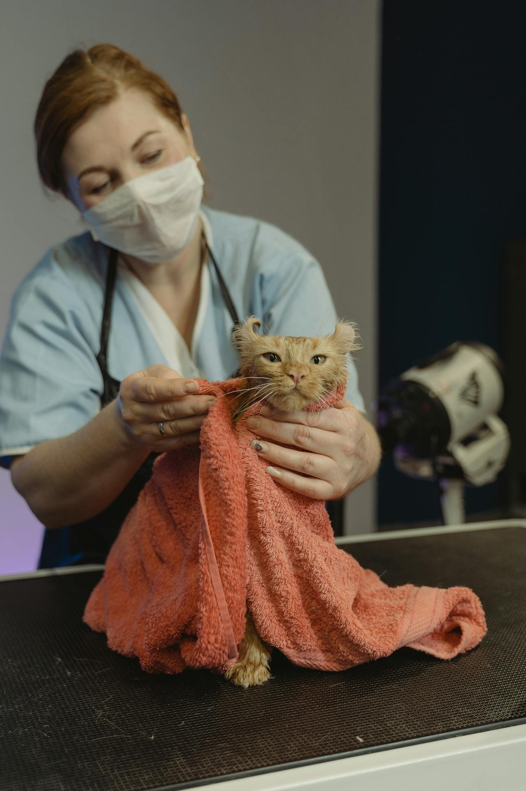
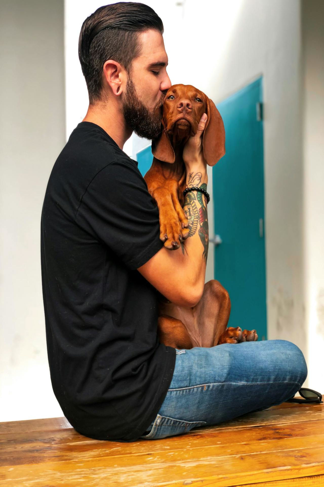
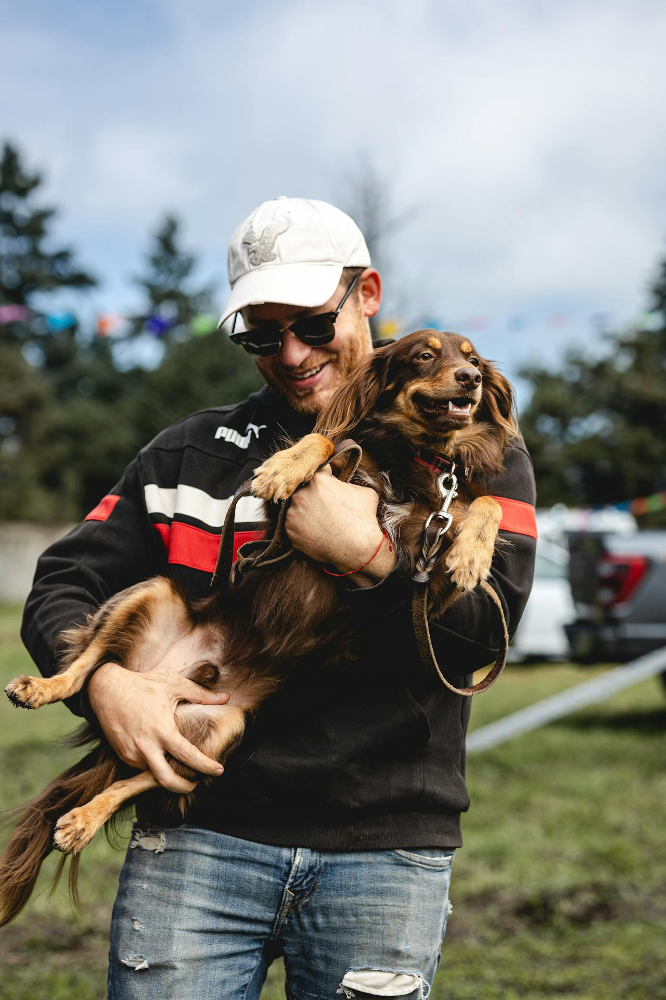

Nossa História
A ONG dos AUMIGOS nasceu em 2015 com propósito de transformar vidas de cães e gatos abandonados. Desde então, realizamos resgates, tratamentos e encaminhamentos para adoção.
Nossa Equipe
-

Dra. Michelle Pires
Veterinária responsável.
-

Rafael Lima
Coordenador de adoções.
-

Gabriel Ferreira
Fundador da ONG dos AUMIGOS
Nosso Impacto
- 🐕 +2.500 cães resgatados
- 🐈 +1.800 gatos adotados
- 💉 +3.000 castrações realizadas